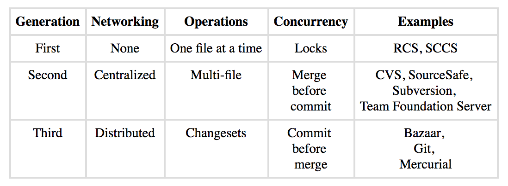

Why Git? How did we get here?
Git is part of the latest generation of Version Control Systems (VCS) and is more specifically referred to as a Distributed Version Control System (DVCS).
Why Version Control?
3 Major Features of VCS
Reversibility
Concurrency
Annotation
1972 - Marc Rochkind
Source Code Control System (SCCS)
1982 - Walter Tichy
Revision Control System (RCS)
1986 - Dick Grune
Concurrent Versions System (CVS)
1994 - CVS Gets TCP/IP Support
2000 - Apache
Subversion (SVN)
1992-2000
ClearCase, Perforce, SourceSafe,
TFVC, and many others
2000 - Bitkeeper
First major distributed VCS
2005 - Enter Git
2008 - Github Launches
